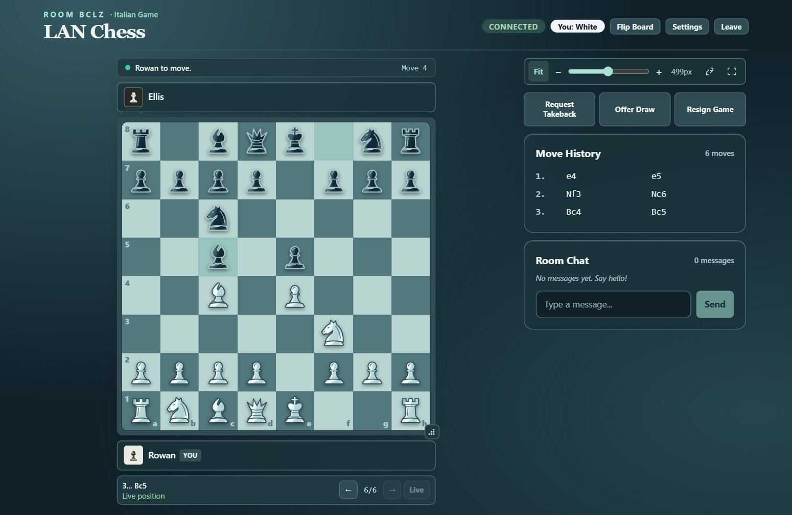
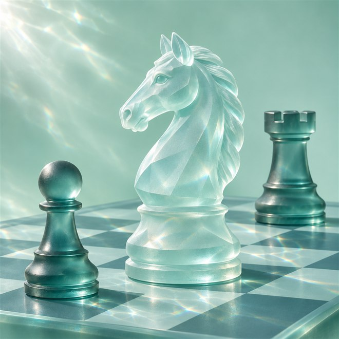
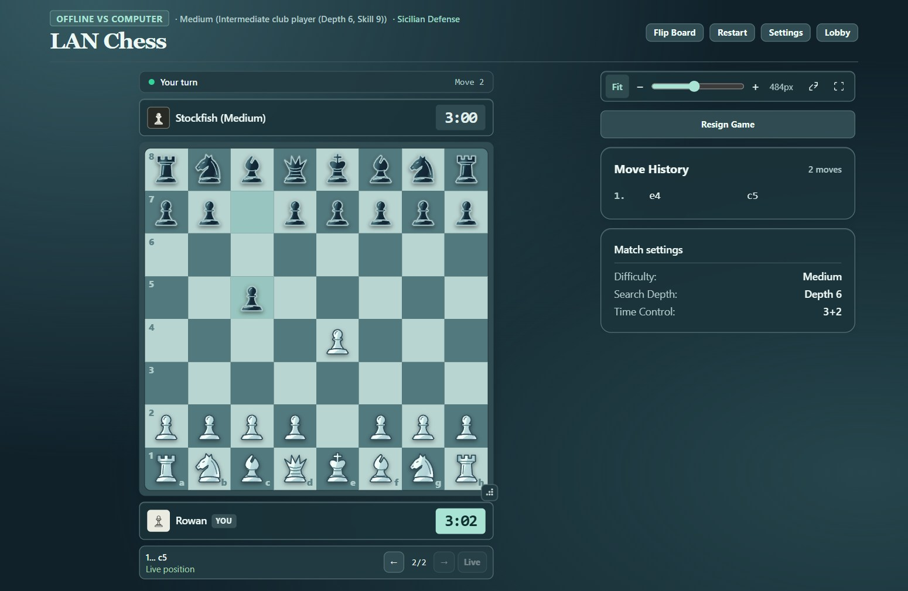
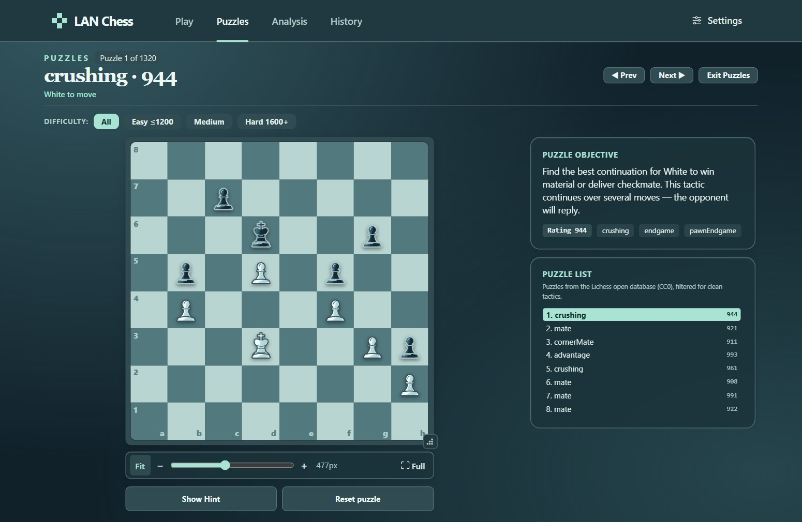

Local multiplayer
Give your next game a home advantage.
Create a room on your computer, then share its link or QR code. Your opponent joins from any browser on the same Wi-Fi.
View screenshot

Local multiplayer chess
One computer hosts. A friend joins from their phone or laptop. All you need is the same Wi-Fi.
v1.2.4 · Windows x64 · Mac universal preview

Local multiplayer
Create a room on your computer, then share its link or QR code. Your opponent joins from any browser on the same Wi-Fi.
View screenshot
Offline practice
Set the engine to one of five difficulty levels and play at your own pace. The engine runs on your computer, even offline.
View screenshot
Tactical puzzles
Work through 1,320 tactical positions. Ask for a hint when you need one, then replay the position to explore another line.
View screenshot
Room setup
Open LAN Chess on Windows or Mac. Choose a clock and select Create Game.
View room settings ↗
Share the room link or let your friend scan the QR code from the waiting room.
View an example invite ↗
Your friend opens the invite on the same Wi-Fi. Their phone or laptop becomes the other side of the board.
View the guest’s screen ↗
LAN Chess · v1.2.4
Install on the host computer. Guests join in a browser.
Intel & Apple silicon. The ad-hoc signed Mac preview may need first-launch approval. Mac installation guide ↗